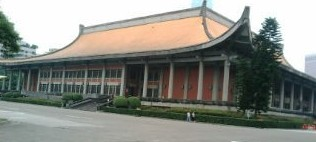
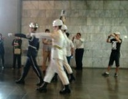
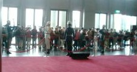
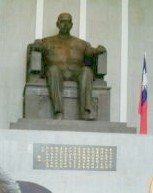
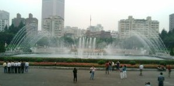

台湾滞在最後の日（12'010,05.06）、女房と台北市内にある国父記念館へ行った（国父は初代中華民国臨時大総統 孫中山（孫文）のこと）。記念館へは以前から行きたかったが、タイミングが合わなくて訪問できなかった。
ホテルからは、地下鉄で数駅ほど。地下鉄の駅を降りて記念館まで歩く。入り口があったのでそのまま入ったら（入場無料）、それは裏側の入場口だった。あらまと思ったが、とりあえずパチリ。
裏側からみた記念館 
記念館は、150m四方くらいはある大きな建物。前に回りこんで正面玄関から記念館に入ろうと思ったが、途中に横玄関があったので、そこから入門した。中に入って老化沿いに転じしてある辛亥革命当時の写真などを見はじめた。すると しばらくして廊下奥の階下へ続く階段から 、なにやら ドカン ガチャン ドカン ガチャンと大きな音がしだした。
こは何事ぞと その辺りにいた全員がそっちを眺めると、５人くらいの衛兵の一団が階段を上がってくるところだった。規則正しいドカン ガチャン という音は、衛兵が一歩歩くたびに響く軍靴の音だった。衛兵は一歩ごとに強く足を踏みつける。５人が一斉に床を踏みつけるので ドカン。軍靴が拍車（飾り金具のようなもの）付きなので、後足を強く引いた瞬間に拍車が鳴ってガチャン。１mほど行進するのに、１分ほど要する感じ。
衛兵の行進 
そのまま衛兵の隊列の横について行き、本殿中央の孫文座像前まで行った。その座像前で先任と交代式。
交代式 
孫文 座像 
衛兵交代式は忠烈祠（ちゅうれっし＝戦没兵士を祠ってあるところ）でも中正記念堂でもみた。交代式に参加する衛兵の数は忠烈祠が一番多かった記憶。しかしここでは、観客の目の前を行進してゆく（ほんの数Mしか離れていない）。しかも軍歌の音が建物内に反響するので、ここの交代式に一番迫力を感じた。
交代式の後、あらためて内部の展示を鑑賞。おおいに満足して正面玄関から外へ出た。正面側には庭園が広がっていて、大きな噴水がキレイだった。
正面玄関前の噴水 
|